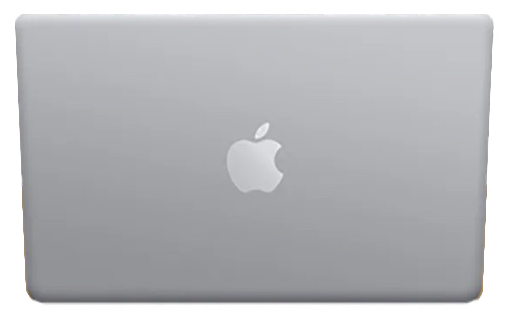
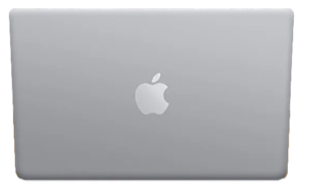

個人簡介
今年27歲，畢業於逢甲大學環境工程系、修習工業設計兩年；
具甲級廢水處理執照、模型搭建及渲染、平面ps、ai繪圖、專案管理專長。
曾任職於環工顧問公司，承辦廢水及空汙專責人員證照訓練班、協助政府環保相關標案執行及設計圖繪製。
目前育有一女未滿一歲，育兒之餘，喜愛閱讀、學習英文、慢跑打球游泳，
產女後對於未來職涯規劃想法有所變動，學設計時偶然認識程式語言即列入待學清單，
幾個月前開始自學python、閱讀演算法及電腦科學相關知識，對程式語言愈發有趣，計畫托嬰後轉職軟體工程師。